For this project, I worked with designers Denna Alece-Dom and Tyler Townley. Our original prompt was to produce a 30-second motion graphics animation that introduces ‘Nature’s Culture’ (a fictional probiotic yogurt drink), communicates its health benefits, and positions it as a delicious, organic, and probiotic-powered beverage for modern wellness seekers.
Our first storyboard focused largely on a bold, toon-shaded style. We took inspiration on the modern Japanese graphic design style of bold colors, bubbly font, and a cute and memorable mascot. At this stage in the project, we were still attempting to work with the constraints of the ‘Nature’s Culture’ brand concept.
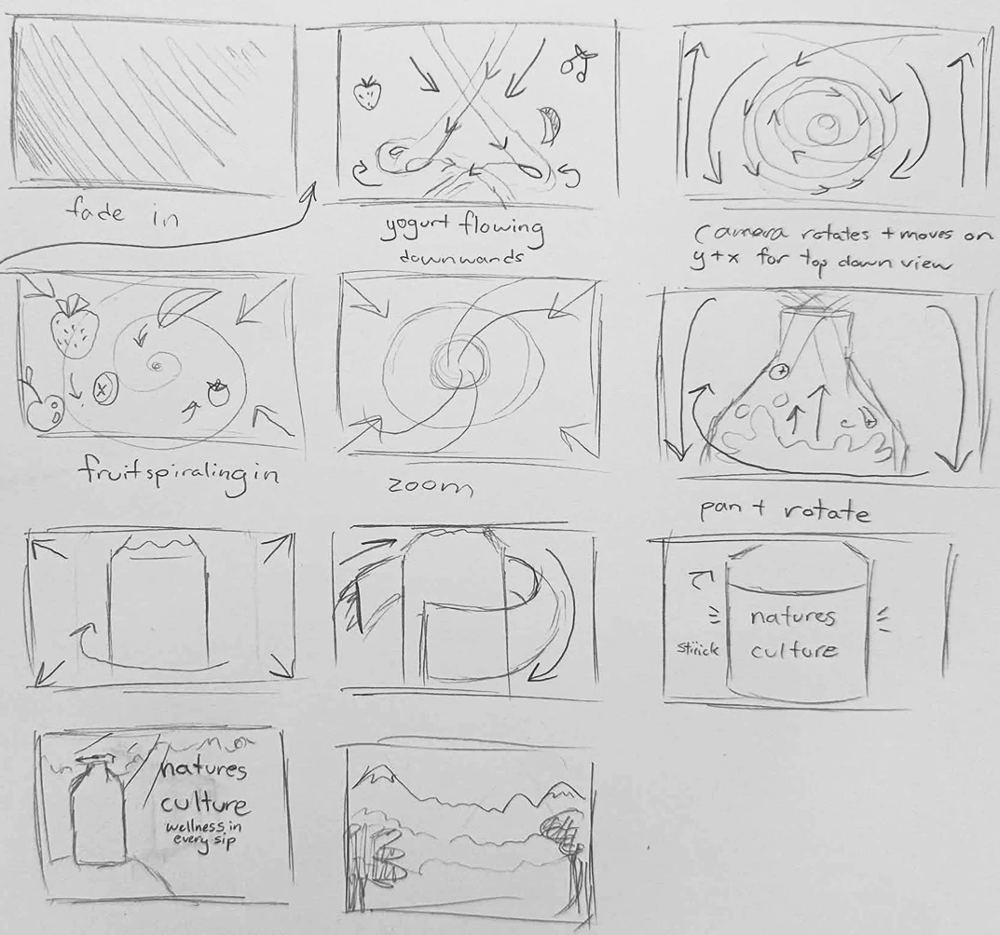
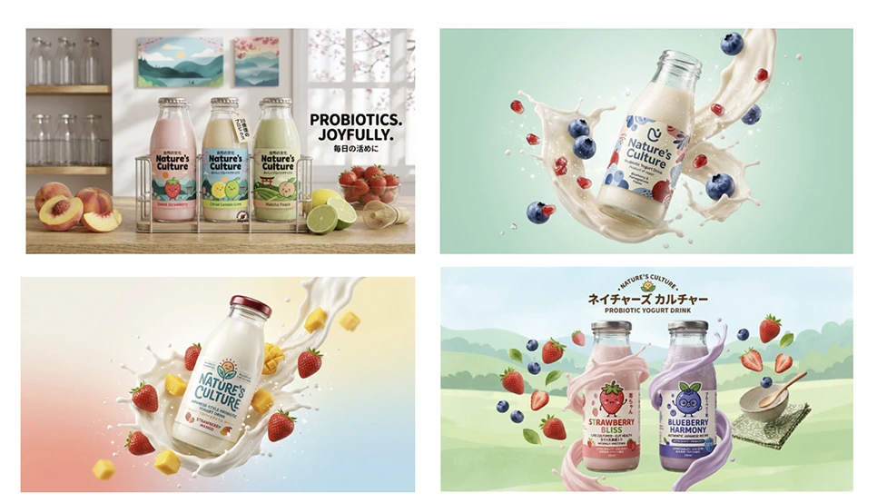
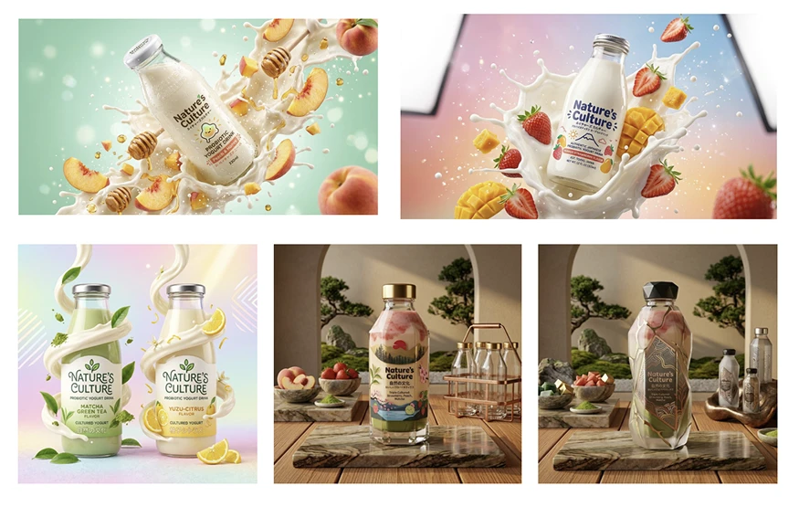
AI-generated mockups made with Gemini
Once we were given permission to think outside the premade ‘Nature’s Culture’ concept, we were able to redesign the assets we were given to better align with our goals. We started with the brand name and logo: Yūki means organic in Japanese, and it was punchy-sounding and easy to remember.
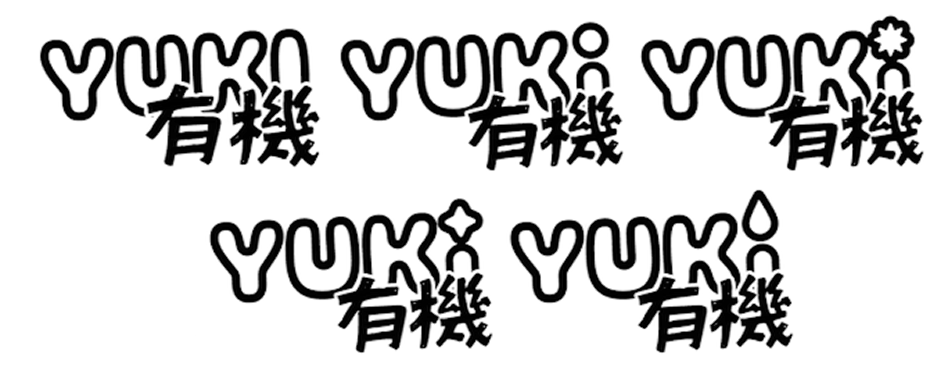
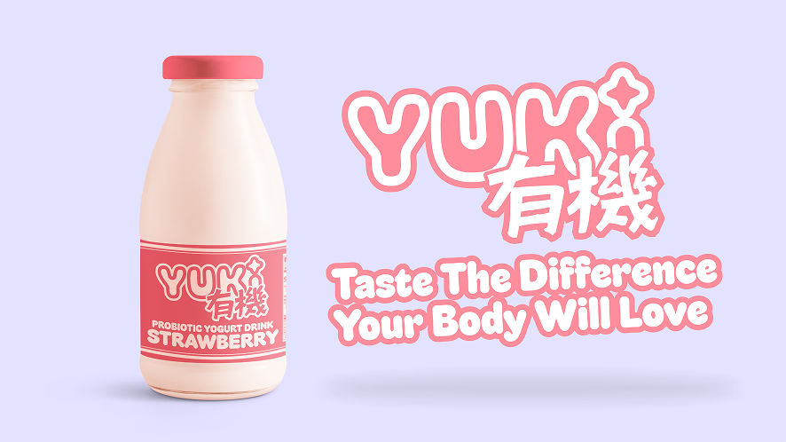
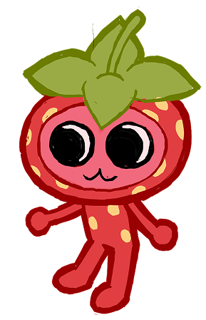
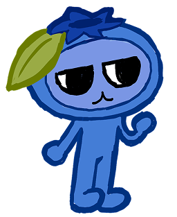
I designed a series of Sanrio-style characters for the Yuki rebrand. Each yogurt flavor (eg. strawberry, blueberry, vanilla, etc.) has its own ‘mascot’, and the mascots interact with each other in advertisements and on blended flavors.
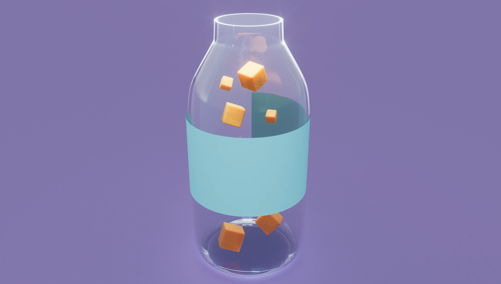
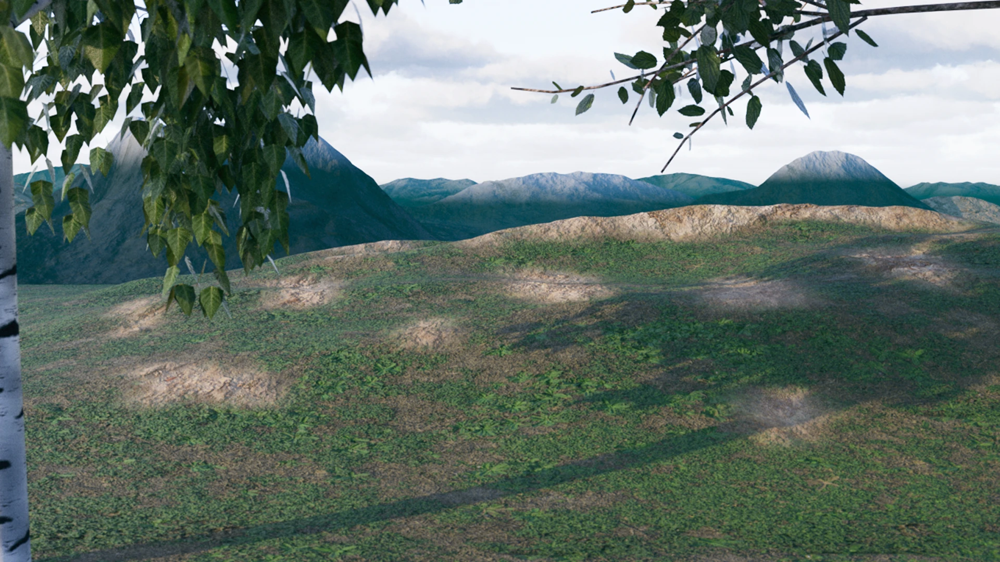
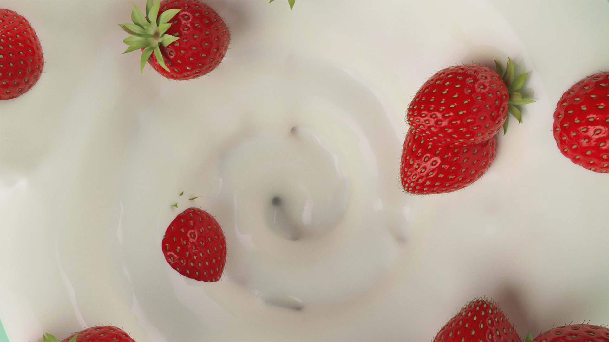
Our rebranding also required a new storyboard that properly represented Yuki. We chose to keep the toon-shaded style and bubbly lettering, but reduced the scope to just strawberry yogurt and added references to Yuki’s new strawberry mascot.
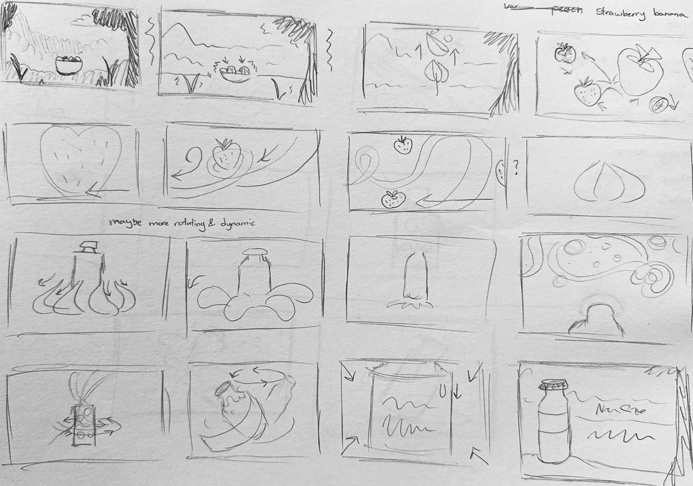
For the “Nature’s Culture” prompt, we were given an AI-generated script and audio to use. For our rebrand, we decided to re-design the audio as well, using non-copyright audio and a custom voiceover from journalist Mariella Santiago.